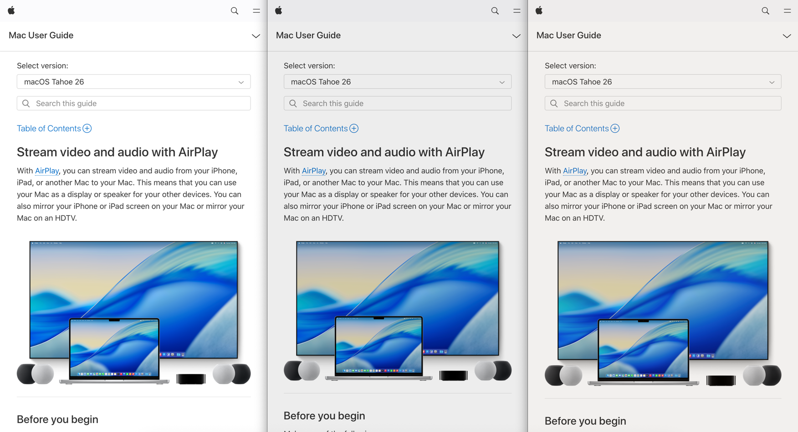

TIL: Dim white pages to not burn eyes
I’m using dark mode everywhere. But many websites, including Google Docs, Apple Support, etc. still have white background without any option to turn on dark mode.
This is a simple Tampermonkey script to dim white pages a bit, so it won’t burn my eyes.
Basically, it applies an overlay div with background rgba(20, 10, 0, 0.12).The page will be a bit yellow.
If you prefer gray, you can change the overlay color to rgba(0, 0, 0, 0.10).
For my page, I do not use the pure white #ffffff for the background, but a warm, natural paper color, #f2f0ee / rgb(242, 240, 238).
It makes my eyes feel better.
Here are the result for comparison (original / gray / yellow):

// ==UserScript==
// @name Make white pages darker
// @namespace http://tampermonkey.net/
// @version 2025-10-10
// @description make white pages darker
// @author OliverNguyen.io
// @match https://*/*
// @icon https://cdn-icons-png.flaticon.com/512/4445/4445942.png
// @grant none
// ==/UserScript==
(function() {
'use strict';
const THRESHOLD = 240; // RGB threshold for "white" detection
// 👉 Dim color, yellow
const OVERLAY_BACKGROUND = 'rgba(20, 10, 0, 0.12)';
// 👉 Alternative, gray
// const OVERLAY_BACKGROUND = 'rgba(0, 0, 0, 0.1)';
// --- Detect if background is near white ---
function isBackgroundWhite(threshold = THRESHOLD) {
function check(elem) {
const bg = window.getComputedStyle(elem).backgroundColor;
const match = bg.match(/rgba?\((\d+),\s*(\d+),\s*(\d+)/);
if (!match) return false;
const [r, g, b] = match.slice(1).map(Number);
return r > threshold && g > threshold && b > threshold;
}
return check(document.body) || check(document.documentElement);
}
// --- Dim the page ---
function applyDimming() {
let overlay = document.querySelector('#z_darker') ?? document.createElement('div');
overlay.id = 'z_darker';
overlay.style.cssText = `
position: fixed;
top: 0; left: 0;
width: 100%; height: 100%;
background: ${OVERLAY_BACKGROUND};
pointer-events: none;
z-index: 99999999;
`;
document.documentElement.appendChild(overlay);
console.log('[>>>—— DARKEN WHITE PAGE ——<<<]');
}
// --- Run detection ---
function run() {
if (isBackgroundWhite()) {
applyDimming();
}
}
// Wait until body is ready
if (document.readyState === "complete" || document.readyState === "interactive") {
run();
} else {
document.addEventListener("DOMContentLoaded", run);
}
})();
Let's stay connected!
Author
I'm Oliver Nguyen. A software maker working mostly in Go and JavaScript. I enjoy learning and seeing a better version of myself each day. Occasionally spin off new open source projects. Share knowledge and thoughts during my journey. Connect with me on , , , , or subscribe to my posts.